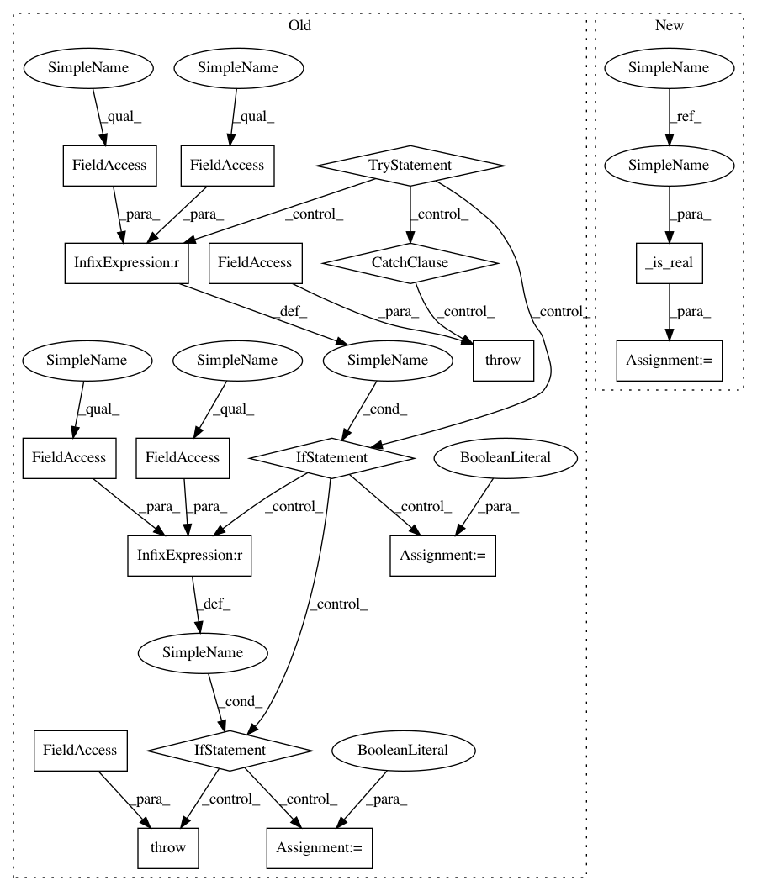

53d1470d7ea882ecbf152ec025bb321af27d3900,scipy/linalg/interpolative.py,,interp_decomp,#Any#Any#Any#,453
Before Change
from scipy.sparse.linalg import LinearOperator
try:
if A.dtype == np.float64:
real = True
elif A.dtype == np.complex128:
real = False
else:
raise _DTYPE_ERROR
except:
raise _DTYPE_ERROR
if isinstance(A, np.ndarray):
if eps_or_k < 1:
eps = eps_or_k
if rand:
After Change
from scipy.sparse.linalg import LinearOperator
real = _is_real(A)
if isinstance(A, np.ndarray):
if eps_or_k < 1:
eps = eps_or_k
In pattern: SUPERPATTERN
Frequency: 3
Non-data size: 18
Instances
Project Name: scipy/scipy
Commit Name: 53d1470d7ea882ecbf152ec025bb321af27d3900
Time: 2013-07-22
Author: pav@iki.fi
File Name: scipy/linalg/interpolative.py
Class Name:
Method Name: interp_decomp
Project Name: scipy/scipy
Commit Name: 53d1470d7ea882ecbf152ec025bb321af27d3900
Time: 2013-07-22
Author: pav@iki.fi
File Name: scipy/linalg/interpolative.py
Class Name:
Method Name: interp_decomp
Project Name: scipy/scipy
Commit Name: 53d1470d7ea882ecbf152ec025bb321af27d3900
Time: 2013-07-22
Author: pav@iki.fi
File Name: scipy/linalg/interpolative.py
Class Name:
Method Name: estimate_rank
Project Name: scipy/scipy
Commit Name: 53d1470d7ea882ecbf152ec025bb321af27d3900
Time: 2013-07-22
Author: pav@iki.fi
File Name: scipy/linalg/interpolative.py
Class Name:
Method Name: svd